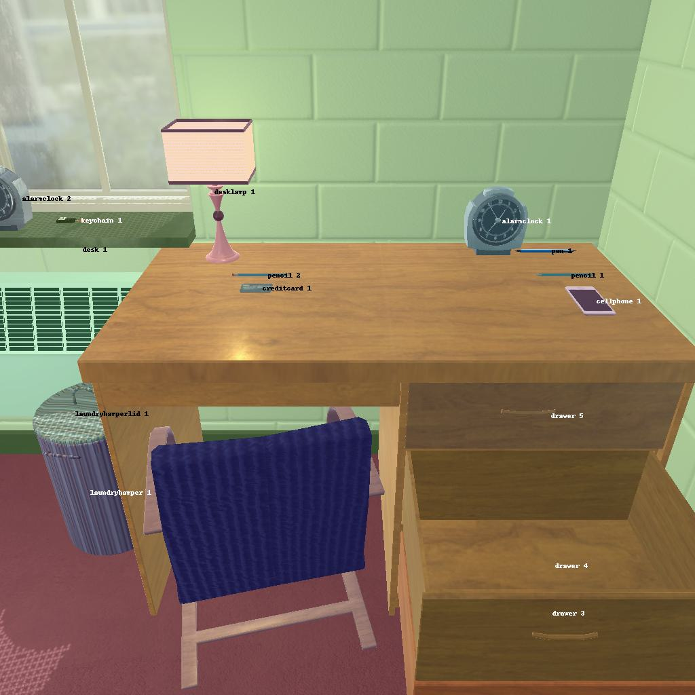

---------------------------------------------------------task: 8---------------------------------------------------------
--------------------------------------------------------------------------------------------------------------------------------------------------------------------
--------------------------------------------------------------------------------------------------------------------------------------------------------------------
Step:--------------------------------------------------------------------------16-------------------------------------------------------------------------------
----------------------------------------
VLM Prompt:
Image1:
Image2:
**Instruction**
1. Analyze the provided image to identify all visible household objects, focusing on those relevant to the task description "put some laptop on desk."
2. Use the analysis of the image and the task hint "The agent must find an object of the desired type, pick it up, find the correct location to place it, and put it down there." to answer the question: what is the most reasonable action in the choices for the task description "put some laptop on desk"?
4. Decide and write the answer using the template: The answer is: (i): , where i is the real number. If there is no desired object in the image, search every place based on **Initial Observation** to find the object. And if no one is exactly correct, choose a similar answer.
**Initial Observation**
You are in the middle of a room. Looking quickly around you, you can see bed (1), garbagecan (1), desk (1), sidetable (1), drawer (1-5), laundryhamper (1)
**Answer Choices**
(1): go to bed 1
(2): go to garbagecan 1
(3): go to desk 1
(4): go to sidetable 1
(5): go to drawer 1
(6): go to drawer 2
(7): go to laundryhamper 1
(8): go to drawer 4
(9): go to drawer 5
(10): close drawer 3
(11): take alarmclock 1 from drawer 3
(12): take laundryhamperlid 1 from drawer 3
(13): take alarmclock 2 from drawer 3
(14): take cellphone 1 from drawer 3
(15): take creditcard 1 from drawer 3
(16): take pen 1 from drawer 3
(17): take pencil 1 from drawer 3
(18): take pencil 2 from drawer 3
(19): take keychain 1 from drawer 3
(20): use desklamp 1
(21): examine drawer 3
**Answer**
Let's think step by step by following the instructions.
----------------------------------------
----------------------------------------
Original Response:
First, we need to identify all visible household objects relevant to the task description "put some laptop on desk." In the image, there is no laptop visible on the desk or in the immediate surroundings.
Based on the task hint, the agent must find an object of the desired type, pick it up, find the correct location to place it, and put it down there. Since we are looking for a laptop to put on the desk and it is not visible in the image, we must search every place based on the initial observation to find the object.
The initial observation lists several locations where the laptop could be: bed, garbagecan, desk, sidetable, drawers, and laundryhamper. Since the desk is already in view and does not have the laptop, we can exclude that. The bed, garbagecan, sidetable, and laundryhamper are less likely to have a laptop, so the drawers are the most probable location.
The answer is: (5): go to drawer 1, as it is the first drawer and a logical place to start searching for the laptop. If the laptop is not there, the agent can proceed to check the other drawers.
----------------------------------------
----------------------------------------
>>> Refine Original VLM Response and Get Pure Action: go to drawer 1, as it is the first drawer and a logical place to start searching for the laptop
----------------------------------------
-----------------------------------------------------------------
Running time: 13.570975542068481 seconds
Total Money: 3.6216299999999984
-----------------------------------------------------------------
-----------------------------------------------------------------
Text Observation:Nothing happens.
-----------------------------------------------------------------
UNSUCCEED